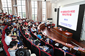
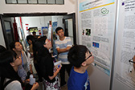
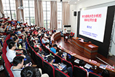
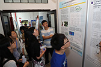

会议日程
运动生物力学的临床应用研究：科研方法与论文写作
主持人：顾冬云（上海交通大学）
演讲人：Nigel Zheng ( 美国北卡罗来纳大学夏洛特分校)、Yue Li( 加拿大多伦多康复研究院 )、陈文明( 上海理工大学 )
时间：2018年06月22日 (星期五) 13:30-17:00
地点：上海交通大学徐汇校区新上院
简介：
运动生物力学是一个有着鲜明医工交叉特色的研究领域。如何从临床需求中凝练出一个好的研究课题，应用工程学手段和方法，设计和完成一个严谨的科学实验，对实验结果进行科学统计、深入解析与阐述，将研究成果撰写成高水平论文并发表，要顺利完成这一系列完整的科研过程，对有志于该领域发展的各学科研究人员、临床医生和研究生们都是一个不小的挑战。
本场workshop将直击上述问题，邀请长期从事该领域研究的国内外资深专家，以结合具体科研案例分析的方式，着重讲解运动生物力学临床研究的科研思路、实验方案设计、常用工程学研究方法（包括动作分析、有限元建模等）和统计分析方法。针对论文撰写和发表中的关键要素和常见问题，进行深入讲解和剖析。参加人员还将在本场workshop中与讲师进行面对面的交流与讨论。
- 学术会议
- 时间：2016年6月23-24日 (星期六、星期日)
- 地点：上海交通大学徐汇校区工程馆214报告厅
2018年6月23（星期六）上午 8:30-12:00
| 运动生物力学的临床研究新进展 主持人：顾冬云 刘宇 | ||
|---|---|---|
| 8:30-8:40 | 欢迎辞 | 高维强 |
| 8:40-9:40 | 大会报告 | |
| 8:40-9:00 | 努力提高步态分析的临床应用价值 | 戴尅戎 |
| 9:00-9:20 | 3D Knee Joint Motion Analysis and Clinical Applications 膝关节运动分析和临床应用 | Nigel Zheng |
| 9:20-9:40 | 跑步时多关节运动控制的生物力学探究 Biomechanical Insights into Multi-joint Movement Control during Running | 刘宇 |
| 9:40-10:25 | 青年学者论文交流与优秀论文评选（1） | |
| 10:25-10:40 | 茶歇 | |
| 10:40-11:20 | 大会报告 | |
| 10:40-11:00 | 跌倒生物力学及在康复中的应用 | Yue Li |
| 11:00-11:20 | 神經系統疾病患者之動作分析 Motion analysis in subjects with neurological disorders | 林光华 |
| 11:20-12:05 | 青年学者论文交流与优秀论文评选（2） | |
| 12:05-13:30 | 午餐 | |
2018-06-23（星期六）下午13:30-17:05
| 骨肌系统的运动生物力学研究 主持人：蒲放 蔡宗远 | ||
|---|---|---|
| 13:30-14:10 | 大会报告 | |
| 13:30-13:50 | Biomechanics of the foot and ankle: what we are trying to understand? | Anmin Liu |
| 13:50-14:10 | 行走所致累积负荷刺激对糖尿病患者足底血流响应的影响 | 蒲放 |
| 14:10-15:10 | 青年学者论文交流与优秀论文评选（3） | |
| 15:10-15:25 | 茶歇 | |
| 15:25-16:05 | 大会报告 | |
| 15:25 -15:45 | No such thing as a simple ankle sprain? : Clinical implications of sensori-motor and functional deficits in people with acute ankle sprain | 杨志鸿 |
| 15:45-16:05 | 基于转化医学理念探讨脊柱牵伸床研发思路 | 李民 |
| 16:05-17:05 | 青年学者论文交流与优秀论文评选（4） | |
2018-06-24（星期日）上午 8:30-12:05
| 步态分析与运动康复 主持人：郑洁皎 姜淑云 | ||
|---|---|---|
| 8:30-10:10 | 大会报告 | |
| 8:30-8:50 | 帕金森病步态障碍及非药物治疗的探索 | 陈生弟 |
| 8:50-9:10 | 步行中的生物力学及其临床应用 | 姜淑云 |
| 9:10-9:30 | Functional Assessment of the Foot Undergoing Percutaneous Achilles Tenotomy in Term of Gait Analysis | 赵黎 |
| 9:30-9:50 | 脑和脊髓损伤导致的痉挛状态的神经外科治疗 | 张海石 |
| 9:50-10:10 | 电针对膝骨关节炎功能康复的生物力学研究 | 王芗斌 |
| 10:10-10:25 | 茶歇 | |
| 10:25-10:45 | 运动生物力学综合解决方案 | 李海波 |
| 10:45-11:05 | 脑瘫儿童表面肌电的临床应用 | Fabio Rossi |
| 11:05-12:05 | 青年学者论文交流与优秀论文评选（5） | |
| 12:05-13:30 | 午餐 | |
2018-06-24（星期日）下午13:30-16:30
| 步态与运动生物力学的技术方法与应用 主持人：陈文明 | ||
|---|---|---|
| 13:30-15:00 | 大会报告 | |
| 13:30-13:50 | 基于可穿戴运动监测系统的临床应用研究 | 顾冬云 |
| 13:50-14:10 | Computational modeling of Musculoskeletal systems in Aging and Disease | 陈文明 |
| 14:10-14:30 | 3D Biomechanical Evaluation of Human Joint: Novel Imaging Technologies for In-Vivo Morphological and Functional Analyses | 蔡宗远 |
| 14:30-15:00 | Clinical Gait Analysis：key elements in data collection and analysis | Richard Baker, Anmin Liu |
| 15:00-15:30 | 提问与讨论 | |
| 15:30-15:45 | 茶歇 | |
| 15:45-16:30 优秀论文颁奖及闭幕式 | ||


 


